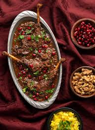

Fesenjan ba Ordak ~ Pomegranate Stew with Duck

Description
Fesenjan ba Ordak (Pomegranate Stew with Duck) is
a signature dish of Persian cuisine, known for
its unique balance of sweet and tangy flavors.
This rich and creamy stew features tender duck,
slowly simmered in a thick sauce made from ground
walnuts and pomegranate molasses.
The slow cooking process allows the flavors to
fully develop, resulting in a velvety sauce with
deep, slightly tart notes. Traditionally served
with saffron rice, Fesenjan ba Ordak is a
sophisticated dish, often prepared for special
occasions and celebrations.
Ingredients
- 5 to 6 lb whole duck
- 1 onion
- 4 cloves garlic
- 2 large bay leaves
- 4 cups walnuts
- 1 cup pomegranate juice
- 1 tbsp flour
- Salt & pepper
Steps
- Wash and pat dry duck, then place on a roasting rack. With a sharp fork prick duck's skin all over making sure that you don't go all the way down to the actual meat, but simply down to the fat under the skin. Generously season and inside and outside of the bird with salt and pepper.
- Add onion, garlic, and bay leaves to the cavity. Roast at 375° for one hour.
- In the mean time, toast the walnuts. Make sure they don't burn.
- Then place them on a baking sheet and let them cool down.
- Once they have reached room temperature, grind them all up.
- Warm up another pot and place 1 tbsp of flour. Toast the flour slightly.
- Add 2 cups of water and mix well until all lumps are gone. I found using a whisk during this stage was very helpful.
- Add ground walnuts.
- Stir until water and walnuts are thoroughly mixed. Cook on low.
- By this time, the duck should be half way done. Remove from the oven and drain the fat which has collected at the bottom of the pan. You can either discard the oil or use it for another recipe later. Please duck back in the oven and roast for another hour.
- While the walnut mixture cooks, make sure you stay on top of it during this process. As the mixture thickens, it can easily burn. This process might take a little while. Once you see a layer of oil forming on top of the walnuts the hard work is pretty much done. You can actually see the oil rise through the bubbles.
- The duck is ready when the internal temperature reaches 170°. Remove aromatics from the belly. Then carve the duck and place in the stew.
- Serve over Persian Rice.
Home